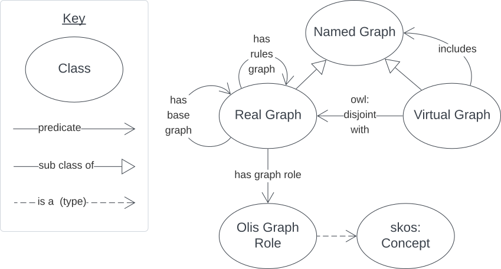
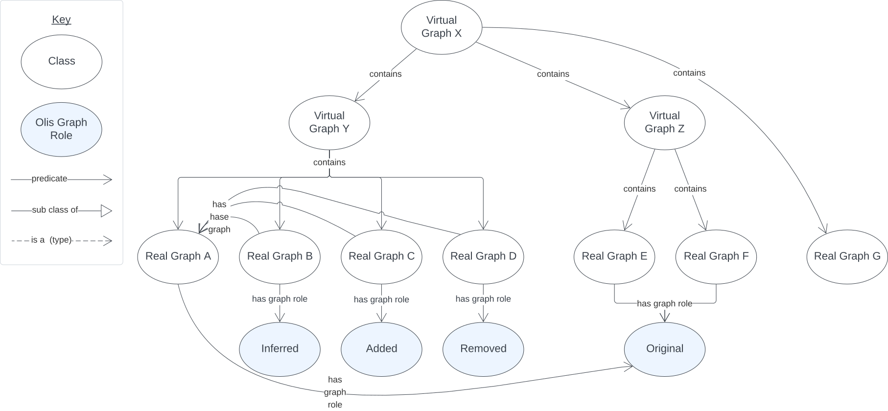

Olis Ontology
Overview
The Olis ontology is a model of virtual and real RDF Named Graphs and relations between them.
It defines only a few classes and a few predicates.

RDF
The ontology RDF is available here.
Validator
A SHACL validator for this ontology is here.
Classes
Named Graph
https://olis.dev/NamedGraph
An RDF Named Graph, as per RDF 1.2's definition.
Real Graph
https://olis.dev/RealGraph
A Named Graph that contains triples.
Example:
PREFIX : <https://olis.dev/>
PREFIX ex: <http://example.com>
PREFIX gr: <http://olis.dev/GraphRoles/>
PREFIX schema: <https://schema.org/>
ex:realGraphX
a :RealGraph ;
:hasGraphRole gr:Original ;
schema:name "Real Graph X" ;
schema:description "A real graph, containing triples about ..." ;
.
ex:realGraphY
a :RealGraph ;
:hasGraphRole gr:Inferred ;
:hasBaseGraph ex:realGraphX ;
schema:name "Real Graph Y" ;
schema:description "A real graph, containing triples inferred from Real Graph X" ;
.
ex:virtualGraphZ
a :VirtualGraph ;
schema:name "Virtual Graph Z" ;
schema:description "A Virtual Graph that includes Real Graphs X & Y" ;
:includes ex:realGraphX , ex:realGraphY ;
.
Virtual Graph
https://olis.dev/VirtualGraph
A Named Graph that does not and cannot contain triples but which may be related to Real Graphs.
Predicates
includes
https://olis.dev/includes
The subject Virtual Graph includes the object Named Graph.
has base graph
https://olis.dev/hasBaseGraph
The subject Real Graph is derived from, or to be added to, the object Named Graph.
has graph role
https://olis.dev/hasGraphRole
The subject Real Graph plays the object Olis Graph Role.
has rules graph
https://olis.dev/hasRuleGraph
The subject Real Graph was generated by the application of the object Real Graph, which are rules, to the object of the subject's olis:hasBaseGraph predicate.
Example:
PREFIX : <https://olis.dev/>
PREFIX ex: <http://example.com>
PREFIX gr: <http://olis.dev/GraphRoles/>
ex:realGraphX
a :RealGraph ;
:hasGraphRole gr:Original ;
.
ex:realGraphY
a :RealGraph ;
:hasGraphRole gr:Inferred ;
:hasBaseGraph ex:realGraphX ;
:hasRulesGraph ex:realGraphZ ;
.
ex:realGraphZ
a :RealGraph ;
:hasGraphRole gr:Rules ;
.
Extended Example

In this extended example, the Virtual Graph X includes two other Virtual Graphs and a Real Graph. The contained Virtual Graphs contain other Real Graphs.
Real Graph A is the base graph for RGs B, C & D meaning they are all related.
Real Graphs E & F both have the Olis Graph Role of Original so they are essentially unrelated to one another.
Real Graph G indicates no role so it is assumed to have the default role of Original.
PREFIX : <https://olis.dev/>
PREFIX ex: <http://example.com>
PREFIX gr: <http://olis.dev/GraphRoles/>
PREFIX schema: <https://schema.org/>
ex:virtualGraphX
a :RealGraph ;
:includes
ex:virtualGraphY ,
ex:virtualGraphZ ;
.
ex:virtualGraphY
a :RealGraph ;
:includes
ex:realGraphA ,
ex:realGraphB ,
ex:realGraphC ,
ex:realGraphD ;
.
ex:virtualGraphZ
a :RealGraph ;
:includes
ex:realGraphE ,
ex:realGraphF ,
.
ex:realGraphA
a :RealGraph ;
:hasGraphRole gr:Original ;
.
ex:realGraphB
a :RealGraph ;
:hasGraphRole gr:Inferred ;
:hasBaseGraph ex:realGraphA ;
.
ex:realGraphC
a :RealGraph ;
:hasGraphRole gr:Added ;
:hasBaseGraph ex:realGraphA ;
.
ex:realGraphD
a :RealGraph ;
:hasGraphRole gr:Removed ;
:hasBaseGraph ex:realGraphA ;
.
ex:realGraphE
a :RealGraph ;
:hasGraphRole gr:Original ;
.
ex:realGraphF
a :RealGraph ;
:hasGraphRole gr:Original ;
.
ex:realGraphG
a :RealGraph ;
.